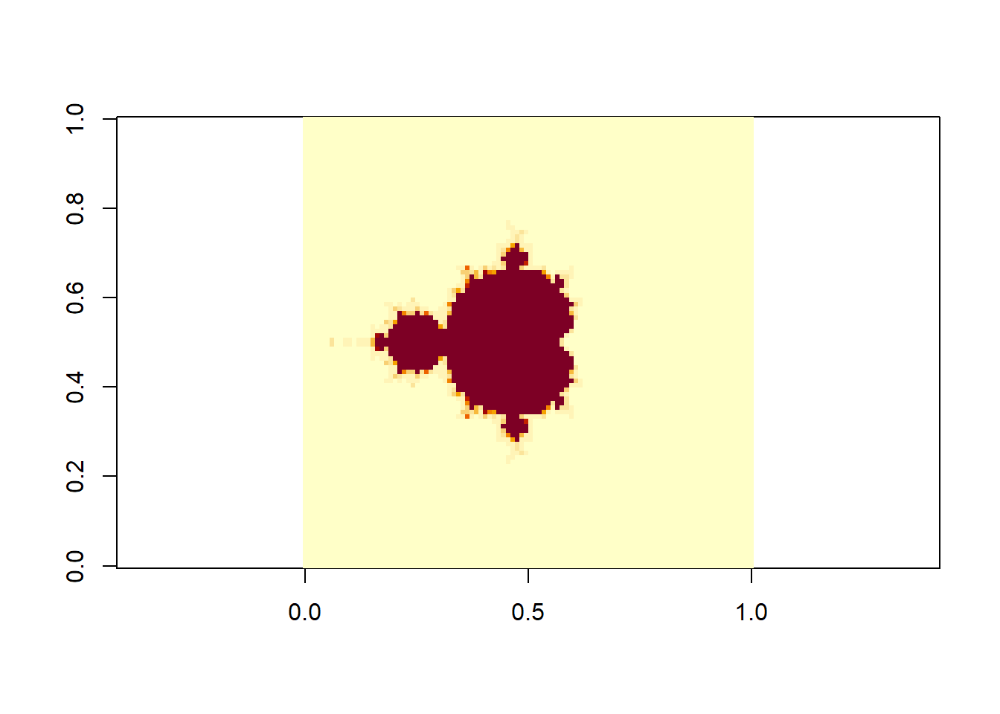
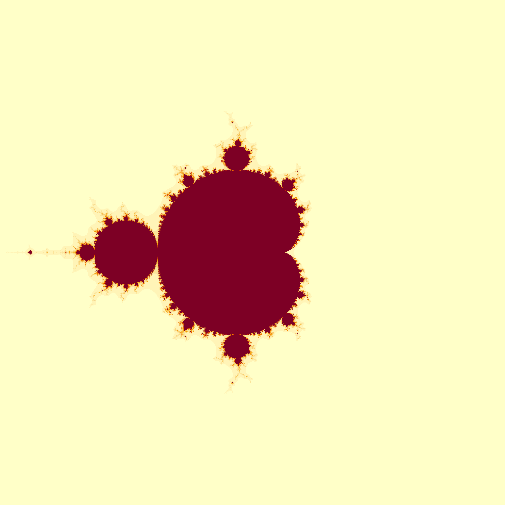
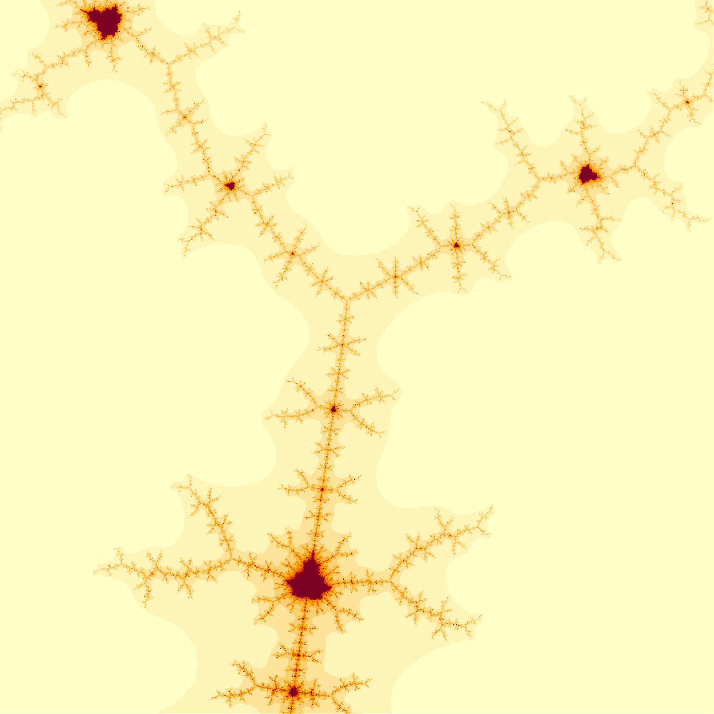
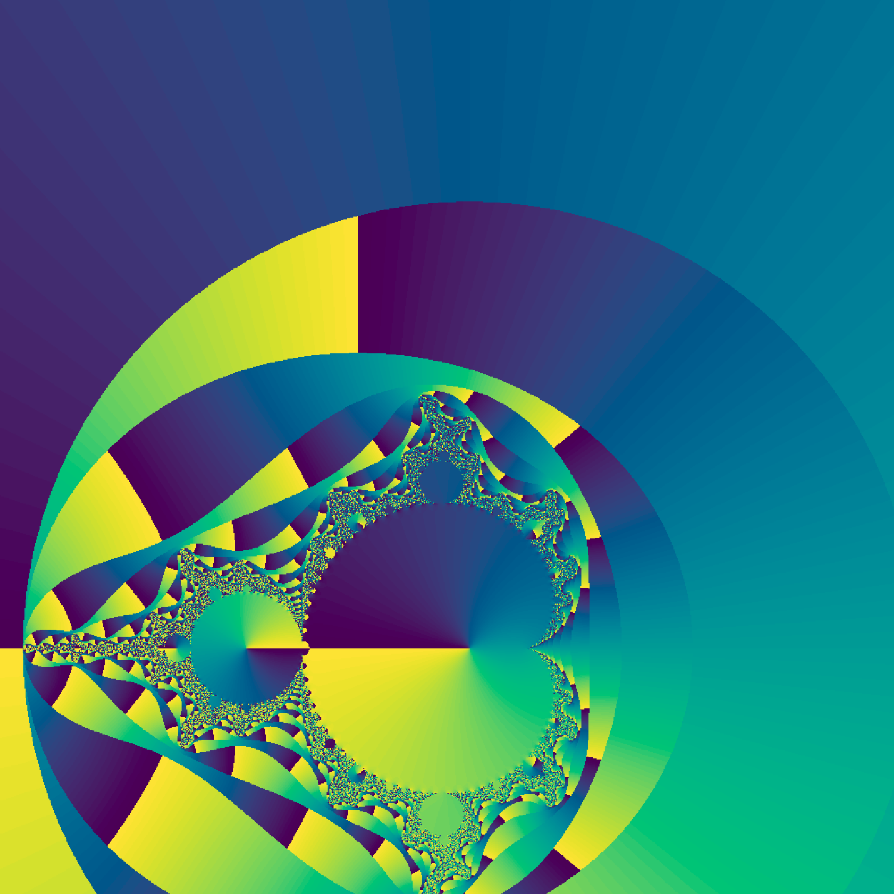

mandlebrot <- function(c,n=100){
z <- rep(0,length(c))
k <- rep(0,length(c))
for(i in 1:n){
index = which(Mod(z)<2)
k[index] <- k[index]+1
z[index] <- z[index]^2 + c[index]
}
k
}A manifesto, and making a Mandlebot set
art
R
In this post I’ll try to articulate why I make mathematical art, and use R to produce one of the most iconic mathart images: a Mandlebrot set.
Why make mathematical art?
Beauty
Timeless and Universal
Elegance
Discovering nature
Fun
The Mandlebrot set
The Mandlebrot set feels like it has been around forever, but in fact it was first observed in the 1980s. The reason for this is simple enough; to generate the Mandlebrot set or similar fractals you need to use a computer with a visual display.
Its mathematical definition is incredibly simple. The Mandlebrot set is all of the values of the complex plane \(\mathfrak{c}\) such that the sequence \[z_0=0; z_{n+1} = z_n^2 + c\] does not tend to infinity.
In practice, we know that if \(|z_n|>2\) for any \(n\) then the sequence will go to infinity, and so to generate the Mandlebrot set emprically we test until either \(|z_n|>2\) or we reach a defined maximum number of iteractions.
A simple implementation of this function in R follows
This function accepts a vector of complex numbers c and returns a vector of integers k corresponding to the number of iterations before \(|z_n|>2\), or the maximum value of iterations \(n\) (default 100).
To plot this function, we can use outer() to generate a matrix then pipe this to image() as follows:
res=100
x <- seq(-2,2,l=res)
y <- seq(-2,2,l=res)
outer(x, y, FUN=\(x,y) mandlebrot(x + 1i*y) ) |> image(asp=1)
The familiar Mandlebrot set emerges.
Let’s increase the resolution to 1000 pixels in each direction, and remove the axes and annotation
res=1000
x <- seq(-2,2,l=res)
y <- seq(-2,2,l=res)
par(mar=rep(0,4))
outer(x, y, FUN=\(x,y) mandlebrot(x + 1i*y) ) |> image(asp=1,ann=F,ax=F)
The Mandlebrot set is a fractal, which means it is infinitely complex and although it is self-similar, it never exactly repeats. An exciting consequence of this is that you can go exploring, and relatively easily find a beautiful spot that (probably) nobody has ever seen before.
R has the identify() function to make this easy. It’s difficult to illustrate in the context of a blog post, but if you start an x11() device and plot your image to that, then identify() will allow you to click on the device window and return the coordinates of that point.
res=500
x <- seq(-2,2,l=res)
y <- seq(-2,2,l=res)
x11()
par(mar=rep(0,4))
outer(x, y, FUN=\(x,y) mandlebrot(x + 1i*y) ) |> image(x=x,y=y,asp=1,ann=F,ax=F)
d <- expand.grid(x=x,y=y)
d[identify(d),]
x y
184238 -0.1002004 0.9498998Now I will use this coordinate as a centre position, and zoom in by a factor of 50
res=1000
x <- seq(-2,2,l=res)/50 - 0.1
y <- seq(-2,2,l=res)/50 + 0.95
par(mar=rep(0,4))
outer(x, y, FUN=\(x,y) mandlebrot(x + 1i*y) ) |> image(asp=1,ann=F,ax=F)
mandlebrot2 <- function(c,n=100, p=FALSE){
z <- rep(0,length(c))
k <- rep(0,length(c))
for(i in 1:n){
index = which(Mod(z)<2)
if(p==TRUE) print(z[index])
k[index] <- k[index]+1
z[index] <- z[index]^2 + c[index]
}
list(iters=k,z=z)
}res=1000
x <- seq(-2,2,l=res) - 0.1
y <- seq(-2,2,l=res) + 0.90
par(mar=rep(0,4))
outer(x, y, FUN=\(x,y) {m <- mandlebrot2(x + 1i*y) ; Arg(m[[2]]) }) |> image(asp=1,ann=F,ax=F,useRaster=T, col=hcl.colors(100,rev = TRUE))